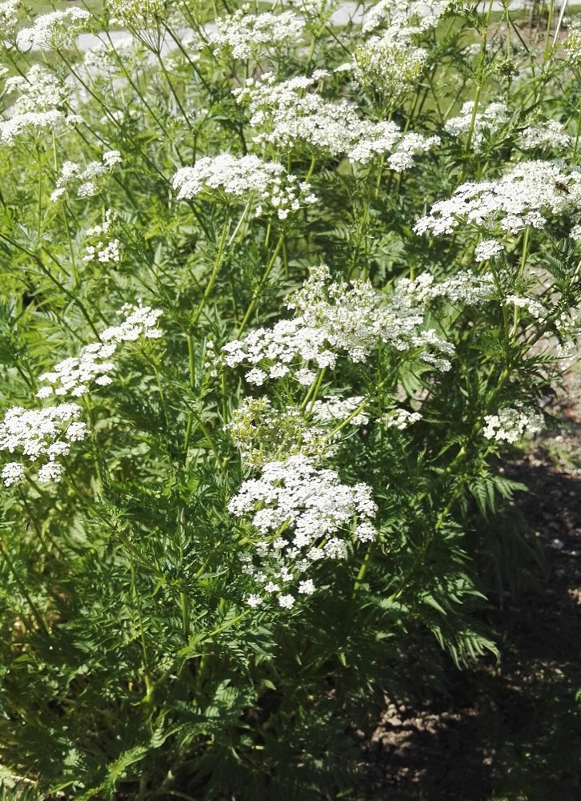
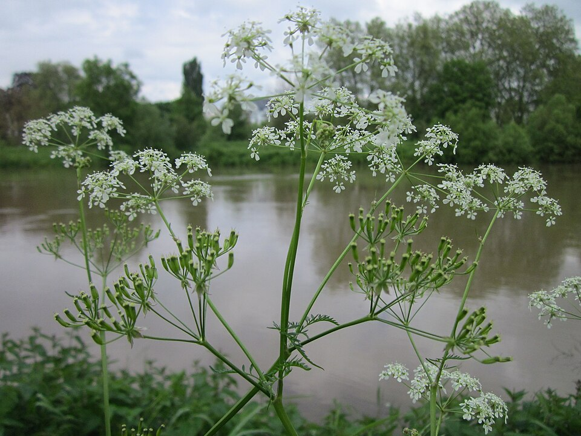

Wild Chervil
Anthriscus sylvestris


- Kind
- herb · Apiaceae
- Legal status
- Watch list species (no regulatory force); not on the Agency of Agriculture quarantine list (checked 2026-10-30)
- Look-alikes
- Queen Anne's lace (Daucus carota); Common caraway (Carum carvi); Wild parsnip (Pastinaca sativa)
Names
Wild chervil, Anthriscus sylvestris. A herbaceous biennial in the carrot family.
Range
Native to Europe. The page says it is especially a problem in hayfields and pastures in central Vermont, and is most often found along roadsides, in meadows and in pastures, on rich, moist soil. This one matters for open land such as an old field.
How to identify (by season; look-alikes and the key difference)
- A biennial up to about 3 feet on the species page (a fact-sheet summary says 3 to 6 feet), with hollow, ribbed or furrowed, entirely green stems, hairy on the lower part, smooth above, with a fringe of hairs at the stem nodes. Leaves alternate, compound, fern-like. Carrot-like taproot.
- Flowers: white, five notched petals, in umbels of 6 to 15 rays, May to June.
- Fruit: smooth, lance-shaped, about 1/4 inch, green then brown.
- Look-alikes: Queen Anne's lace blooms later and has small feathery bracts beneath the flower cluster; wild chervil lacks them. The species page does not compare it. The sap of wild chervil can cause minor skin irritation: wear gloves and long sleeves.
Through the year
Dates are typical for Vermont and shift with elevation and year; "approximate" means the source gave a season and the dates are a translation of it.
| When | What | Look for | What to do | Dates |
|---|---|---|---|---|
| May 1 to Jun 30 | flower (identify) | White, five-petaled, notched flowers in umbels of 6 to 15 rays on a hollow, hairy-based, ribbed green stem; it flowers earlier than Queen Anne's lace and lacks the feathery bracts under the flower cluster. | Treat before it flowers so it does not set seed. | stated |
| May 10 to Jun 5 | survey (control) | The window before flowering, mid-May to early June. | Pull the whole plant including the taproot, bag it, and clean boots and equipment; repeat for re-sprouts. | approximate |
| Jun 15 to Sep 15 | fruit (avoid) | After seed set, mowing can spread the seed. Do not mow stands that have gone to seed, and clean mowers and vehicles. | approximate |
Habitat and spread
Abandoned and agricultural fields, edges, open disturbed areas, pastures, yards and gardens. Spreads by seed and by taproots with lateral buds. Seeds persist in the soil for only a few years. Seed can travel on mowers, vehicles, clothing and equipment.
Damage
Tall and aggressive, it forms dense stands that shade and outcompete native vegetation, and can damage forage crops.
Control (by method, timing, follow-up, what not to do)
- Timing: treat before the plants flower, so the mature plants do not set seed.
- Pulling: remove the whole plant and root system; root fragments can resprout. The page warns mechanical work can disturb soil and encourage the seed bank; contain removed material. Pulling works best on medium to large plants when the soil is wet (summary of the treatment sheet).
- Mowing alone makes it resprout, and mowing after seed set can spread it (summaries).
- Chemical: limited effectiveness, because it resists many herbicides; check current best practices and follow the label; do not apply while flowering; if you cut first, apply the lowest effective volume.
- Grazing: a news item reports Vermont towns using sheep on chervil and buckthorn on public land with better results than annual mowing.
- Biocontrol: none known.
- Disposal and sanitation: contain removed material and clean clothing, boots and equipment before leaving; specific disposal instructions are not on the page. Ask the Vermont DEC Waste Management & Prevention Division before disposing of it.
- Follow-up: check for re-sprouts, missed plants and new seedlings.
Legal status
A watch-list species: it has no regulatory force and is used to educate the public.
Sources
- Vermont Invasives, Wild Chervil: https://www.vtinvasives.org/invasive/wild-chervil
- Vermont Agency of Agriculture, quarantine list (not listed): https://agriculture.vermont.gov/node/11701
- Vermont Invasives search summaries: "Watch list species highlight: Wild Chervil"; the 2019 fact sheet; the Wild Chervil, Anthriscus sylvestris, Species Biology and Phenology treatment sheet; "To Control Invasive Species, Some Towns Release The Sheep"
Vermont Woodland Owner's Reference, built 2026-11-11. Rules and dates here are summaries, not legal advice; dates shift with elevation and year. Photo and recording credits · The text is by Loop Works, CC BY 4.0 (pictures and recordings keep their own licenses)